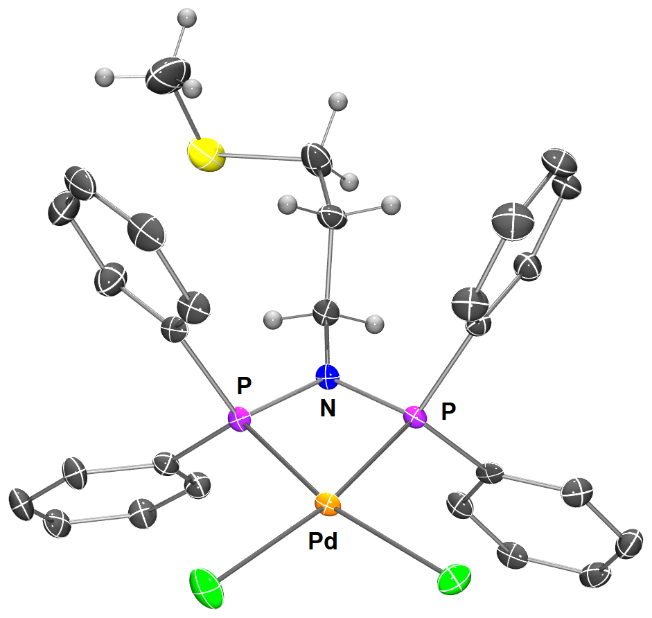

MOLECULAR CATALYSIS
Designing coordination and organometallic complexes for selective bond activation and catalytic transformations.
Ni · Pd · Co · Cu · FeLigand design · Cross-coupling · Bond activation
FROM MOLECULES TO A MORE SUSTAINABLE FUTURE
Coordination chemistry and earth-abundant metals for catalysis, controlled polymerization and sustainable polymer transformations.
DISCOVER OUR RESEARCH →
Earth-abundant
metals for
tomorrow’s chemistry
THREE COMPLEMENTARY DIRECTIONS FOR TOMORROW'S CHEMISTRY

Designing coordination and organometallic complexes for selective bond activation and catalytic transformations.
Ni · Pd · Co · Cu · Fe
Exploring metal-mediated approaches to control radical and ring-opening polymerizations and access well-defined polymer architectures.
OMRP · ATRP · ROP
Developing molecular approaches toward more sustainable polymer synthesis, recycling and upcycling.
Bulk & immortal ROPRecent research explores termination pathways of carbon-centered radicals using coordination chemistry and mechanistic insight.
Palladium and nickel coordination chemistry applied to selective coupling transformations.
Vincent Fagué successfully defended his PhD thesis. All the best for the next steps!
V. Fagué, C. Fliedel, R. Poli et al. · Inorganic Chemistry
L. Forget, C. Fliedel et al. · ChemistryEurope
Molecular catalysis for controlled and sustainable polymer synthesis.
PEOPLE · IDEAS · CHEMISTRY
We bring together coordination chemistry, catalysis and polymer science to understand molecular reactivity and develop more sustainable transformations.
MEET THE GROUP →JOIN US
We are interested in hearing from motivated students and researchers working at the interface of coordination chemistry, catalysis and polymer chemistry.